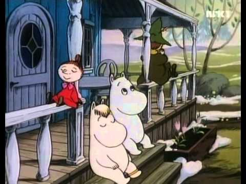

Vår i Mummidalen
FIN 2008 (55 minutter)
Genre: animasjon, eventyr
Summary
Etter en lang, snørik vinter våkner Mummidalen langsomt til live igjen. Det er vår. Men i Mummihuset begynner det å skje merkelige ting når Mummitrollet og Snusmumriken tar med hjem en hatt som de har funnet på toppen av et fjell. Eggeskall forvandles til skyer, og huset får besøk av selveste Kongen av California. (Cover) Serien På eventyr med Mummifamilien bygger på Tove Janssons Mummiforrellinger.